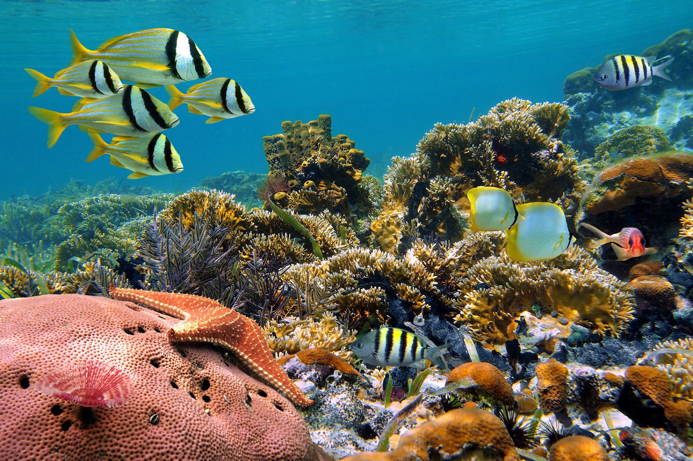
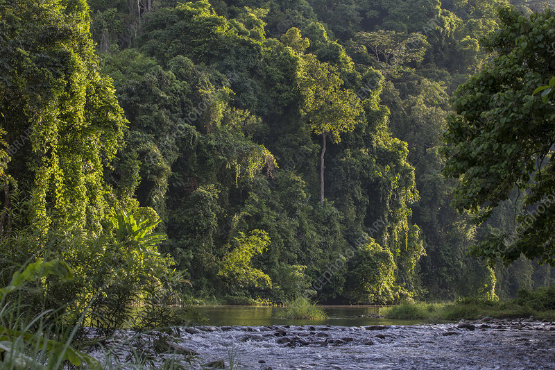

About Palawan
The Last Frontier of the Philippines
The Last Frontier of the Philippines
From ancient seafarers to Spanish colonizers, Palawan's history is as rich as its landscapes.
Archaeological finds in Tabon Cave on Quezon Island date human habitation back 47,000 years, making Palawan one of the oldest inhabited places in Southeast Asia.
Before Spanish colonization, the Sultanate of Brunei held significant influence over northern Palawan, and trade networks connected the island to China, Borneo, and Java.
Spanish colonizers built Fort Santa Isabel in Taytay in 1667. Taytay served as Palawan's capital before Puerto Princesa took over in the 19th century.
Puerto Princesa became a city in 1970. Palawan's tourism boom accelerated after the Underground River earned UNESCO and New 7 Wonders recognition.
Palawan is home to multiple indigenous groups preserving ancient traditions.

World-class recognition, natural wonders, and unmatched beauty.

Palawan has been voted the world's best island multiple times by Condé Nast Traveler and Travel + Leisure readers.

Two UNESCO World Heritage Sites — the Underground River and Tubbataha Reef — plus some of the richest coral reefs in the Coral Triangle.

The Palawan bearcat, Palawan peacock-pheasant, and Philippine mouse deer are found only here — a naturalist's paradise.